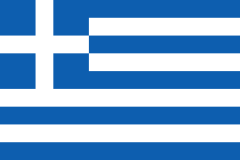
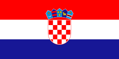

Kompetencje kluczowe drogą do interdyscyplinarnego kształcenia obywatela Europy.
Realizacja projektu
Kursy metodyczne:
 |
 |
 |  | |
| Niemcy Berlin | Włochy Florencja | Kreta Heraklion | Grecja Pireus | Chorwacja Zagrzeb |
| 23.08.2021 r.– 28.08.2021 r. | 23.08.2021 r. – 28.08.2021 r. | 19.07.2021 r. – 24.07.2021 r. | 26.06.2022 r. – 01.07.2022 r. | 01.08.2022 r. – 05.08.2022 r. |
| Digital media: thr classrom of the future | Discovering Renaissance Art In Florence | Europe between Mythology, Modernity and Multiculturalism | European Project Manager | Erasmus+ structured course and workshops |
Kursy językowe:
|
 |
| Włochy Florencja | Hiszpania Malaga |
| 08.08.2022 r. – 13.08.2022 r. | 22.08.2022 r. – 26.08.2022 r. |
Job shadowing:
|
|
| Hiszpania Gandia | Hiszpania Gexto |
| 23.05.2022 r. – 27.05.2022 r | 09.05.2022 r. – 13.05.2022 r. |
| Wizyta w szkole partnerskiej IES Ausias March | Wizyta w szkole partnerskiej IES JULIO CARO BAROJA BHI |
Kreta
Heraklion
19.07.2021 r. – 24.07.2021 r.
Europe between Mythology, Modernity and Multiculturalism
Kurs „Europa między mitologią, nowoczesnością i wielokulturowością” realizowany był w Heraklionie na Krecie. Zajęcia rozpoczęły się od analizy mitu o Europie w sztuce i historii. W ten sposób organizatorzy kursu starali się pokazać w jaki sposób migracje wpływają na zmiany kulturowe i społeczne na świecie. W jaki sposób ukształtowały europejską świadomość kulturową. Zajęcia były prowadzone w formie warsztatów oraz wycieczek do najważniejszych, pod względem dziedzictwa kulturowego miejsc w Heraklionie i okolicy. Wycieczki były okazją do zobaczenia, jak na greckiej wyspie przenikały się wpływy różnych cywilizacji. Mieliśmy okazję zobaczyć zabytki cywilizacji minojskiej zwiedzając Pałac w Knossos i muzeum Archeologiczne w Heraklionie. Spacerując uliczkami Heraklionu i Rethymno mogliśmy zobaczyć wpływy bizantyjskie, weneckie i tureckie, które ukształtowały charakter i wygląd wspomnianych miejsc. Spotkanie w międzynarodowym gronie było okazją do podzielenia się wiedzą na temat praktyk edukacyjnych w krajach, z których pochodzili uczestnicy kursu. Zapoznaliśmy się z działaniem systemów edukacyjnych: Grecji, Hiszpanii i Włoch. Poznaliśmy nowe narzędzia do nauczania o dziedzictwie europejskim, które możemy wykorzystać podczas zajęć z uczniami w odkrywaniu dziedzictwa kulturowego naszego regionu, Polski i Europy.
Niemcy
Berlin
23.08.2021 r. – 28.08.2021 r.
Digital media: thr classrom of the future
Kurs “ Media cyfrowe-klasa przyszłości” odbył się on w Berlinie i obejmował m. in zagadnienia tj. odwrócona klasa, wdrażanie mediów społecznościowych w proces nauczania, wykorzystywanie aplikacji internetowych do pracy z młodzieżą oraz doskonalenie kompetencji kluczowych przez zabawę i gry edukacyjne. Poznane różnorodne techniki nauczania z pewnością spotkają się z dużym zainteresowaniem uczniów na lekcjach.
Ważnym aspektem kurs było także nawiązanie współpracy z nauczycielami z innych krajów : Hiszpanii, Włoch i Grecji oraz wymiana doświadczeń związanych z pracą w szkole. Trener prowadzący szkolenie, był nie tylko nauczycielem, ale również przewodnikiem po Berlinie i Poczdamie. Oprowadzając po tych miastach przekazał wiele ciekawych informacji z nimi związanych, o których nie można dowiedzieć się z książek.
Włochy
Florencja
23.08.2021 r.– 28.08.2021 r.
Discovering Renaissance Art In Florence
W ostatnim tygodniu sierpnia nauczyciele uczestniczyli w kursie Poznawanie sztuki renesansu we Florencji.30 – godzinny program składał się z wykładów, prezentacji, a także wizyt w muzeach, kościołach i kaplicach.
Zajęcia teoretyczne były znakomitym uzupełnieniem wiedzy o artystach renesansu włoskiego, którego kolebką była Florencja. Zdobycie teoretycznej wiedzy jest obecnie łatwe, wiele informacji, zdjęć znajdujemy zarówno w pięknie wydanych albumach i oczywiście w Internecie. Mimo tych dogodności czymś zupełnie innym jest obcowanie z dziełami wielkich mistrzów. Najlepsza kopia nie zastąpi przeżywania arcydzieł zarówno w muzeach – przede wszystkim w Uffizi, a także w niezwykłych budowlach renesansowych, których we Florencji jest bez liku. Trudno przedstawić większość arcydzieł, które w ramach kursu można było zobaczyć. Nie da się ukryć, że spojrzenie z bliska na rzeźbę Michała Anioła, to wrażenie, które trudno ująć w słowa. To po prostu trzeba zobaczyć !
Ważnym przeżyciem było również oglądanie i analizowanie niedokończonych rzeźb Michała Anioła. Gdy z dużego bloku marmuru wyłaniają się postaci, można sobie wyobrazić ogrom pracy artysty, jego talentu a również wysiłek fizyczny.
Nie sposób wymienić wszystkich ważnych miejsc, które zobaczyli uczestnicy kursu we Florencji. Nie można pominąć Piazza Duomo z olbrzymią katedrą i znakiem szczególnym miasta – kopułą Brunelleschiego. Tak więc 6 dni kursu to ciągłe obcowanie ze sztuką, arcydziełami mistrzów florenckich.